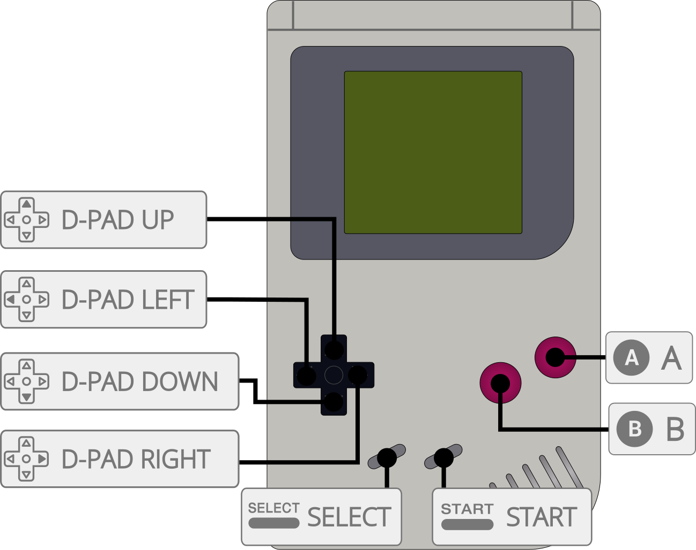

An adaptation of SameDuck to play Mega Duck games.
The SameDuck core has been authored by
The SameDuck core is licensed under
A summary of the licenses behind RetroArch and its cores can be found here.
Content that can be loaded by the SameDuck core have the following file extensions:
RetroArch database(s) that are associated with the SameDuck core:
SameDuck does not require BIOS (bootrom) files to work.
Frontend-level settings or features that the SameDuck core respects.
| Feature | Supported |
|---|---|
| Restart | ✔ |
| Screenshots | ✔ |
| Saves | ✔ |
| States | ✔ |
| Rewind | ✔ |
| Netplay | ✕ |
| Core Options | ✔ |
| RetroAchievements | ✕ |
| RetroArch Cheats | ✕ |
| Native Cheats | ✕ |
| Controls | ✔ |
| Remapping | ✔ |
| Multi-Mouse | ✕ |
| Rumble | ✔ |
| Sensors | ✕ |
| Camera | ✕ |
| Location | ✕ |
| Subsystem | ✔ |
| Softpatching | ✕ |
| Disk Control | ✕ |
| Username | ✕ |
| Language | ✕ |
| Crop Overscan | ✕ |
| LEDs | ✕ |
The SameDuck core's internal core name is 'SameDuck'
Frontend's State directory
Link cable emulation is supported in single-cart mode and in dual-cart mode. To use it in single-cart mode enable the Single cart dual mode option under options and reload the content
The SameDuck core has the following option(s) that can be tweaked from the core options menu. The default setting is bolded.
Settings with (Restart) means that core has to be closed for the new setting to be applied on next launch.
Color correction [SameDuck_color_correction_mode] (off|correct curves|emulate hardware|preserve brightness|reduce contrast)
High-pass filter [SameDuck_high_pass_filter_mode] (off|accurate|remove dc offset)
Enable Rumble (All Games|never)
The SameDuck core supports the following device type(s) in the controls menu, bolded device types are the default for the specified user(s):
Rumble only works in the SameDuck core when

| User 1 - 2 Remap descriptors | RetroPad Inputs |
|---|---|
| B | |
| Select | |
| Start | |
| Up | |
| Down | |
| Left | |
| Right | |
| A | |